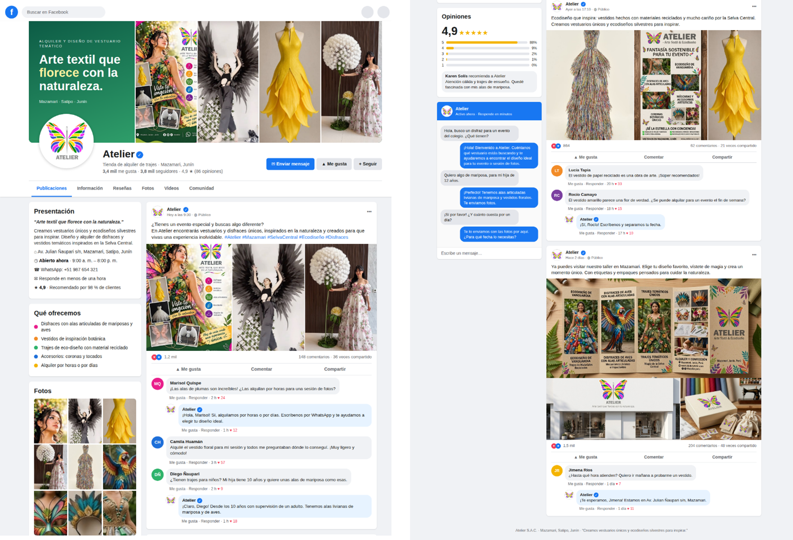
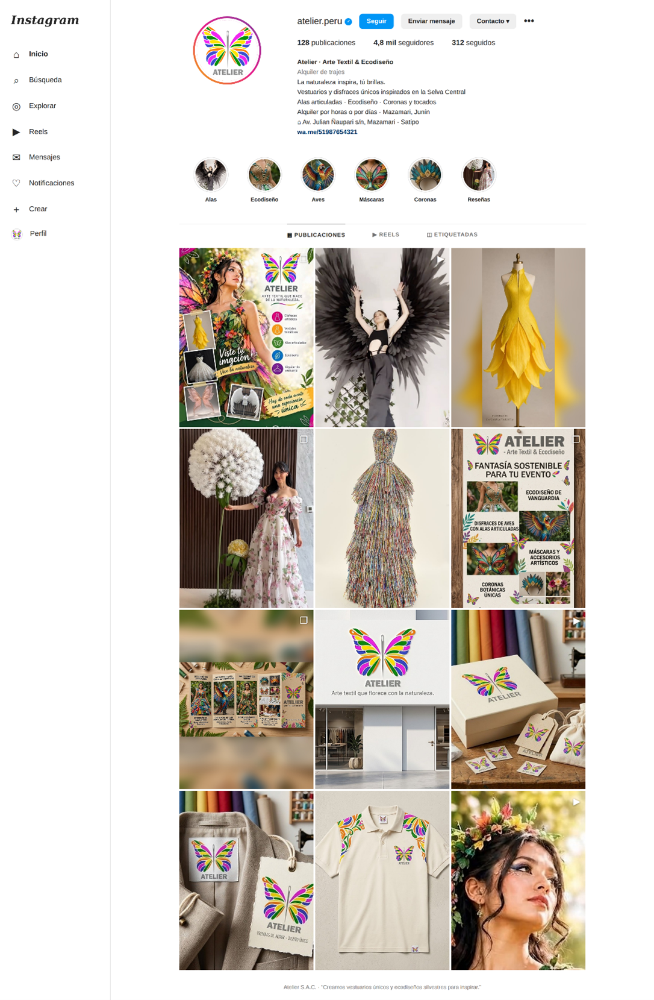
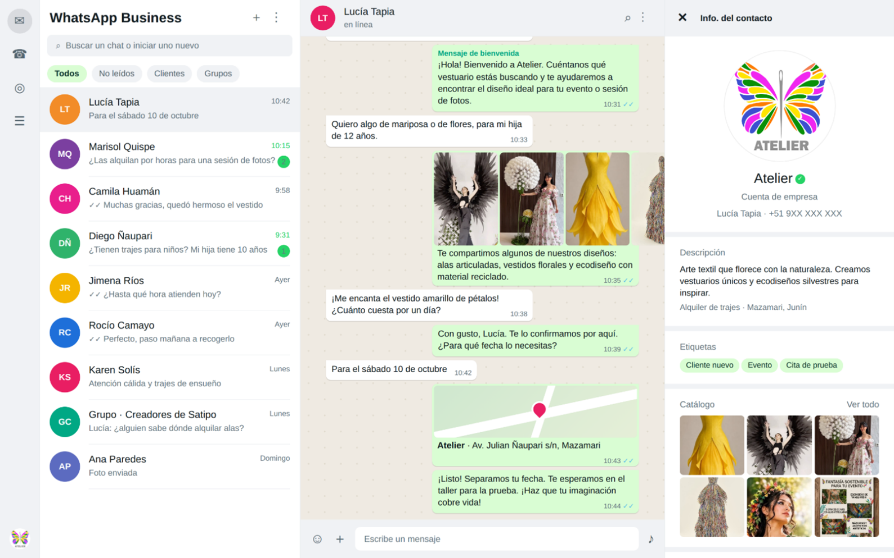
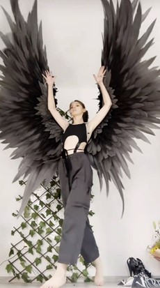

Canales de Comunicación con el Público
“¿Tienes un evento especial y buscas algo diferente? En Atelier encontrarás vestuarios y disfraces únicos, inspirados en la naturaleza y creados para que vivas una experiencia inolvidable.”

“La naturaleza inspira, tú brillas. Descubre nuestros diseños y encuentra el vestuario perfecto para hacer realidad tu idea.”

TikTok
Video corto / Detrás de cámaras“¿Te imaginas convertirte en una mariposa? En Atelier hacemos realidad tus ideas. ¡Mira cómo cobra vida uno de nuestros diseños!”

WhatsApp Business
Atención directa e instantánea (+51 983 054 061)“¡Hola! Bienvenido a Atelier. Cuéntanos qué vestuario estás buscando y te ayudaremos a encontrar el diseño ideal para tu evento o sesión de fotos.”

Afiches y Material Impreso
Publicidad en local, letreros y afiches informativosAplicación del mensaje principal y logo corporativo en letreros del establecimiento (Av. Julián Ñaupari s/n, Mazamari) y piezas gráficas impresas para eventos turísticos en la Selva Central.
“¡Wao! ¡Qué nivel de arte! Me siento como un ángel oscuro súper empoderado. Estas alas son una locura total. En Atelier sí que saben cómo transformar una idea en algo inolvidable y mágico. ¡Me encanta que respeten tanto la naturaleza en cada detalle!”
